![]()
| Probability of Class 1 | Predicted by model | Truth |
|---|---|---|
| 0.0035892 | Class2 | Class2 |
| 0.6786211 | Class1 | Class1 |
| 0.1108935 | Class2 | Class2 |
| 0.7351617 | Class1 | Class1 |
| 0.0162400 | Class2 | Class2 |
| 0.9992751 | Class1 | Class1 |
分類モデルの評価について
2021-07-30
ダニエル書第五章
そのしるされた文字はこうです。メネ、メネ、テケル、ウパルシン。その事の解き明かしはこうです、メネは神があなたの治世を数えて、これをその終りに至らせたことをいうのです。テケルは、あなたがはかりで量られて、その量の足りないことがあらわれたことをいうのです。ウパルシンは、あなたの国が分かたれて、メデアとペルシャの人々に与えられることをいうのです。
Take Home Message
- 分類モデルの場合は弁別能と較正能を別個に評価しよう！
- 弁別能：AUROC
- 較正能：Calibration plotを用いる
- 分類モデルの場合はクラスの偏りに要注意！
- モデルの比較にNRI, Decision-curve analysisも使おう！
分類モデルとは？
分類モデルとは？
- いわゆるモデルは大きく分けて回帰モデルと分類モデルに分けられる
- 回帰モデル：連続値（BNP値、e’、PCWPなど）を直接予測する
- 分類モデル：0/1（生死、出血の有無など）を予測する
- 実際の分類モデルは 0.4, 0.357 などイベントが起きる確率を計算する
- 任意のカットオフ（通常0.5）で0か1に丸め込んでいる(上ではClass)
分類の評価：DiscriminationとCalibrationって何？
分類の評価：DiscriminationとCalibration
- 分類モデルの評価では、Discrimination(弁別能)とCalibration(較正能)を別個に評価する
- Discrimination
- 0/1の正確性: 実際にこの患者がHigh riskかどうかの評価
- 言い換えると、患者をRiskの順番に並び替える能力
- Calibration
- その患者のリスクの絶対値の評価
- まずはDiscrimination > Calibrationだが、特に実臨床ではCalibrationも重要な評価項目
-> Calibrationはしばしば忘れ去られている (Alba et al. 2017)
例
- Discrimination
- 「ERで胸痛を訴えているこの患者がMIかどうか？」
- そもそも、これが当たらないとどうしようもない
- Calibration
- 「このNSTEACSの患者にPCIをしたときに透析になってしまう確率は？」
- 20%を超えるようなら今日はカテなしで、明日以降前負荷をかけた上でCAGをするか再検討しよう
- 0/1だけでなく、実際の数字が重要
DiscriminationとCalibration
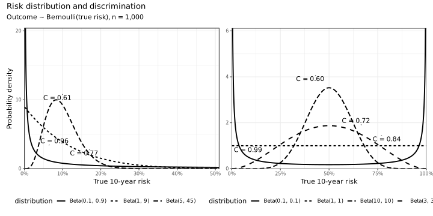
- DiscriminationとCalibrationはトレードオフ
- さらに、アウトカムの発症率やリスクの分布にも影響を受ける
- 完璧なDiscrimination & poor calibration
- 完ぺきなCalibrationで完ぺきなDiscriminationをするためにはかなり無理がある分布でないと達成できない
Discriminationの評価について
| truth | Class1 | Class2 | predicted |
|---|---|---|---|
| Class2 | 0.0035892 | 0.9964108 | Class2 |
| Class1 | 0.6786211 | 0.3213789 | Class1 |
| Class2 | 0.1108935 | 0.8891065 | Class2 |
| Class1 | 0.7351617 | 0.2648383 | Class1 |
| Class2 | 0.0162400 | 0.9837600 | Class2 |
| Class1 | 0.9992751 | 0.0007249 | Class1 |
→
予測と現実の0/1の組み合わせを
2×2にまとめる
2×2にまとめる
| Truth |
Predicted
|
|
|---|---|---|
| Class1 | Class2 | |
| Class1 | 227 | 50 |
| Class2 | 31 | 192 |
- 0/1の評価（混同行列からの計算）
- Accuracy、感度、特異度、Fβ scoreなど
- リスク毎の感度・特異度などを評価したもの
- ROC、PR curve
混同行列関連
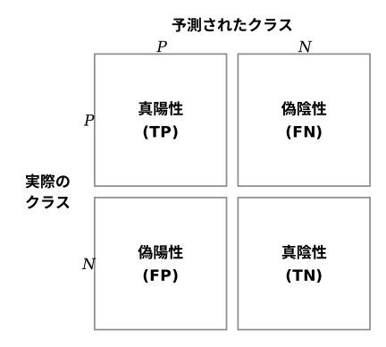
\[ \begin{aligned} \text{Accuracy} &= \frac{TP + TN}{TP + TN + FP + FN} \\[6pt] \text{Recall / Sensitivity} &= \frac{TP}{TP + FN} \\[6pt] \text{Specificity} &= \frac{TN}{TN + FP} \\[6pt] \text{Precision} &= \frac{TP}{TP + FP} \\[6pt] F_1\text{-Score} &= 2 \times \frac{\text{Precision} \times \text{Recall}} {\text{Precision} + \text{Recall}} \\[6pt] F_{\beta} &= \frac{(1 + \beta^2)\cdot TP} {(1 + \beta^2)\cdot TP + \beta^2\cdot FN + FP} \end{aligned} \]
混同行列関連の指標について
- 国試でやった感度・特異度・尤度比等
- 一番使われるのはAccuracy
- Fβ score（F1, F0.5, F2など）で、偽陰性・偽陽性の何を重視するかで選択が変わる
- βに大きな数字を入れるとRule outを重視(感度が高くなる)
- βに小さな数字を入れるとRule inを重視(特異度が高くなる)
- 偽陰性を極力避けたいとき
- 一般人口への癌やHIVのscreeningなど
- F2などが良い
- 偽陽性を極力避けたいとき
- HFrEFで心筋生検をすべきかどうか、など
- F0.5などが良い
ROC指標ができるまで
1. 予測結果を
昇順で並べる
| 予測確率 | 実測値 |
|---|---|
| 2.00e-07 | Class2 |
| 4.50e-06 | Class2 |
| 5.80e-06 | Class2 |
| 5.90e-06 | Class2 |
| 1.22e-05 | Class2 |
| 1.40e-05 | Class2 |
→
閾値を動かしながら
予測値を作る
予測値を作る
2. 閾値ごとでの予測
| 予測確率 | 実際のアウトカム | 閾値:2.0e-07での予測 | 閾値2:4.50e-06での予測 |
|---|---|---|---|
| 1.79e-07 | Class2 | Class2 | Class2 |
| 4.50e-06 | Class2 | Class1 | Class2 |
| 5.81e-06 | Class2 | Class1 | Class1 |
| 5.92e-06 | Class2 | Class1 | Class1 |
| 1.22e-05 | Class2 | Class1 | Class1 |
| 1.40e-05 | Class2 | Class1 | Class1 |
→
各々の閾値での予測のClassから
感度・特異度を計算
感度・特異度を計算
3. 閾値毎の感度・特異度
| 閾値 | 特異度 | 感度 |
|---|---|---|
| -Inf | 0.0000000 | 1 |
| 2.00e-07 | 0.0000000 | 1 |
| 4.50e-06 | 0.0041322 | 1 |
| 5.80e-06 | 0.0082645 | 1 |
| 5.90e-06 | 0.0123967 | 1 |
| 1.22e-05 | 0.0165289 | 1 |
| 1.40e-05 | 0.0206612 | 1 |
リスク毎の評価
| .threshold | specificity | sensitivity | recall | precision |
|---|---|---|---|---|
| -Inf | 0.0000000 | 1 | NA | NA |
| 2.00e-07 | 0.0000000 | 1 | 1 | 0.5160000 |
| 4.50e-06 | 0.0041322 | 1 | 1 | 0.5170341 |
| 5.80e-06 | 0.0082645 | 1 | 1 | 0.5180723 |
| 5.90e-06 | 0.0123967 | 1 | 1 | 0.5191147 |
| 1.22e-05 | 0.0165289 | 1 | 1 | 0.5201613 |
- 感度と1-特異度で点を結ぶとROC曲線
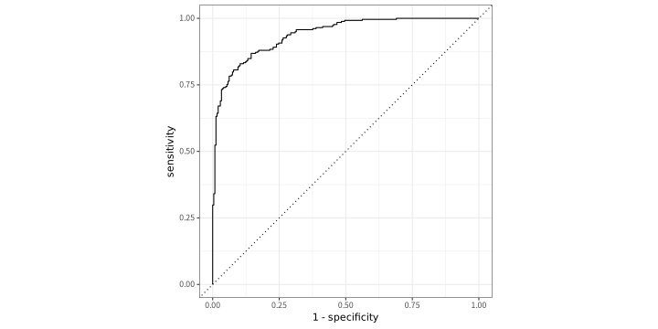
# A tibble: 1 × 3
.metric .estimator .estimate
<chr> <chr> <dbl>
1 roc_auc binary 0.939- PrecisionとRecallで点を結ぶとPR曲線
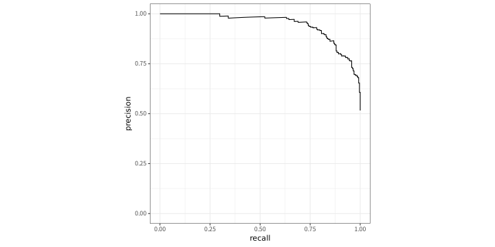
# A tibble: 1 × 3
.metric .estimator .estimate
<chr> <chr> <dbl>
1 pr_auc binary 0.946Confusion matrix baseの評価の注意点
| AUROCの値 | 意味 |
|---|---|
| 0.5-0.6 | poor |
| 0.6-0.75 | possible helpful |
| 0.75- | clearly useful |
- Truthが偏ったデータでは混同行列関連は役に立たない
- 特にAccuracyは一番ダメ
- 全部0の予測でも90%超えてしまう
- PRAUC等が役に立つが、数字だけでの評価は困難
- PR curveは、より不均衡なデータでモデルの差をちゃんと見つけやすい(AUROCだと差が出にくい)
- 不均衡データではAUROCは差を見つけにくいが、AUROCは数字で大体の印象が分かるのが強みだと思う
結局どうすればいいの？
- 均衡がとれているデータの場合
- 根拠がある場合
- 例えばPEの許容される見逃し率は2%(Creager et al. 2026)
- 胸痛の評価ToolでのMACEの許容率は1%未満(Than et al. 2013)
- 妥当な感度、特異度の値が分かっている
- カットオフをこちらで決めてAccuracy、感度/特異度やF1 valueを記載
- AUROCはあった方が良い
- 根拠がない場合
- Youden indexやFβ scoreをカットオフとしてAccuracy等を評価
- AUROCは必須
- 根拠がある場合
- 不均衡データの場合
- あまり決まっていない
- AUPRCはどこかに記載した方が無難、個人的には不均衡でもAUROCをメイン解析にしても良いと思う
- Youden indexやFβ scoreなどを用いて、意味があるカットオフを作ってからNNT等を評価する
Calibrationの評価について
- 全体像を示すもの
- Calibration plot
- 一つの数字で表すもの
- Recalibration parameters: Calibration plotの傾きと切片を記述
- Hosmer-Lemeshow: 予測確率からn個の群分けを行い、その中での期待される発生件数と実際の発生件数をχ2検定で評価する
- Brier score: 実際のイベントと予測確率の差を二乗和にして平均を取った値
- Calibration plotが、どこの予測能が悪いかもわかるため最も良い評価(Alba et al. 2017)
- 分類数には要注意
Calibration Plotの作り方
1. 予測確率で昇順に並べ、10群に分ける
| 予測確率 | 実測値 | 群 |
|---|---|---|
| 2.00e-07 | Class2 | 1 |
| 4.50e-06 | Class2 | 1 |
| 5.80e-06 | Class2 | 1 |
| 5.90e-06 | Class2 | 1 |
| 1.22e-05 | Class2 | 1 |
| 1.40e-05 | Class2 | 1 |
| 予測確率 | 実測値 | 群 |
|---|---|---|
| 0.9999054 | Class1 | 10 |
| 0.9999103 | Class1 | 10 |
| 0.9999104 | Class1 | 10 |
| 0.9999209 | Class1 | 10 |
| 0.9999720 | Class1 | 10 |
| 0.9999965 | Class1 | 10 |
→
群ごとに
平均を計算
平均を計算
2. 群ごとの平均予測確率と実際の発症率
| 群 | 平均予測確率 | 実際の発症率 |
|---|---|---|
| 1 | 0.00 | 0.001 |
| 2 | 0.02 | 0.012 |
| 3 | 0.14 | 0.078 |
| 4 | 0.26 | 0.213 |
| 5 | 0.38 | 0.498 |
| 6 | 0.56 | 0.762 |
| 7 | 0.86 | 0.913 |
| 8 | 0.98 | 0.978 |
| 9 | 0.96 | 0.994 |
| 10 | 1.00 | 0.999 |
3. 平均予測確率（X軸）と実際の発症率（Y軸）をプロット
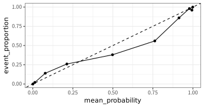
Calibration～Hsomerr-Lemeshow検定
| group | n | mean_prob_Class1 | truth_Class1 | truth_Class2 | chisq |
|---|---|---|---|---|---|
| 1 | 50 | 0.0006264 | 0 | 50 | 0.0313374 |
| 2 | 50 | 0.0122140 | 1 | 49 | 0.2512359 |
| 3 | 50 | 0.0776816 | 7 | 43 | 2.7102181 |
| 4 | 50 | 0.2125326 | 13 | 37 | 0.6731346 |
| 5 | 50 | 0.4978346 | 19 | 31 | 2.7770496 |
| 6 | 50 | 0.7620909 | 28 | 22 | 11.2627800 |
| 7 | 50 | 0.9134009 | 43 | 7 | 1.8025730 |
| 8 | 50 | 0.9778961 | 49 | 1 | 0.0102392 |
| 9 | 50 | 0.9938732 | 48 | 2 | 9.4214688 |
| 10 | 50 | 0.9992472 | 50 | 0 | 0.0376700 |
- 10群に分けて、各々で平均確率と実際のOutcomeを並べる
- 各グループ毎にX^2検定を行って、すべての統計量を足し算
- P > 0.05でモデルの当てはまりが良いとされる
- 一つの数値としては良いが、Low risk/High risk群でどうBiasがあるかは分からない
Brier Score
\[ \text{Brier Score} = \frac{1}{N} \sum_{i=1}^{N} \left(\hat{p}_i - y_i\right)^2 \]
| Probability of Class1 | predicted | True label | diff_squared |
|---|---|---|---|
| 0.004 | Class2 | 0 | (0-0.004)2 = 0 |
| 0.679 | Class1 | 1 | (1-0.679)2 = 0.103 |
| 0.111 | Class2 | 0 | (0-0.111)2 = 0.012 |
| 0.735 | Class1 | 1 | (1-0.735)2 = 0.07 |
| 0.016 | Class2 | 0 | (0-0.016)2 = 0 |
| 0.999 | Class1 | 1 | (1-0.999)2 = 0 |
- 実際のアウトカムがClass 1なら1, Class2だったら0とする
- 各々の予測確率(連続値)と上記のアウトカムの差の二乗を足し算する
- 連続値のモデルのMSEのイメージ
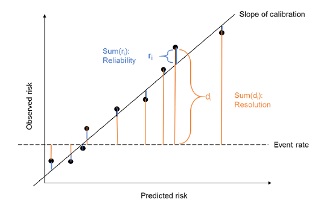
Advanced model performance：モデルの比較
モデルの比較
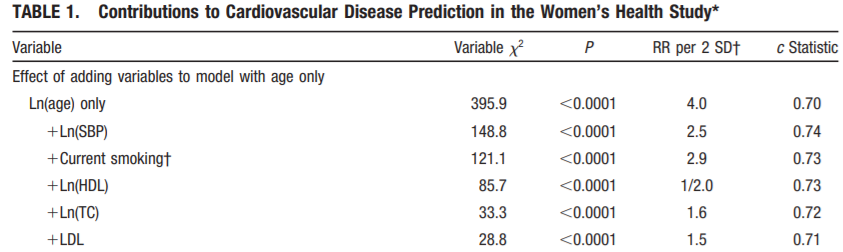
(Cook 2007)- AUROCでは、有用なマーカーを追加しても元のモデルの性能によっては追加による性能の改善を捉えられない事が知られている
- よくあるシチュエーションとしてベースのモデルに何かの変数を追加したときにモデルが良くなるか？
- NRI / IDI
NRI（Net Reclassification Index）
- 古いモデルから新しいモデルでの分類によってどのように変化したかを示す(Alba et al. 2017)
- Shift tableと似ているがちょっと違う
- 実は複数の種類がある
- 大きく分けて以下に分けられる
- Category-based NRI
- Continuous NRI
Category-based NRI
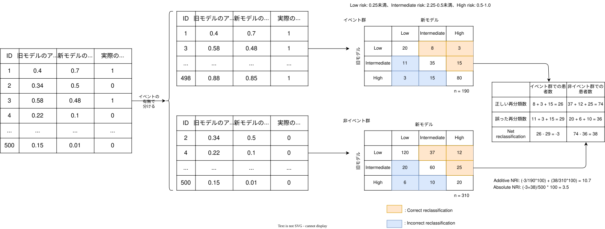
- イベントがあった患者とイベントがなかった患者で分けて、各々の群を新旧のモデルで分類する
- 分け方は何群でも良いが3群が多い
- イベントあり群では旧モデルよりもRiskを高く分類したらPositive、Riskを低く分類したらNegative
- イベントなし群では逆
- 差し引きして、最終的なモデルの良さを数値で表す
- 実臨床に沿っているのが利点だが、一方で分類の仕方が恣意的になる
continuous NRI
1. 新旧モデルの予測確率
| bin_status | simple_pred | complex_pred |
|---|---|---|
| 1 | 0.9831682 | 0.9960985 |
| 0 | 0.6226083 | 0.6099328 |
| 1 | 0.7451466 | 0.7292784 |
| 1 | 0.7828269 | 0.6291928 |
| 1 | 0.5681130 | 0.4233752 |
| 0 | 0.4439187 | 0.1625034 |
→
新旧の確率を比較し、
イベントの有無ごとに
上昇・非上昇の割合を計算
イベントの有無ごとに
上昇・非上昇の割合を計算
2. イベントの有無ごとに集計
| bin_status | n | Prob(new > old) | Prob(old >= new) |
|---|---|---|---|
| 1 | 129 | 0.6589147 | 0.3410853 |
| 0 | 147 | 0.2176871 | 0.7823129 |
[1] 0.8824- Continuous NRI：全てのカットオフでのNRIの平均
- 次の形の方が分かりやすい
\[ \mathrm{NRI}_{\mathrm{continuous}} = \Pr(\text{higher} \mid \text{event}) - \Pr(\text{lower} \mid \text{event}) + \Pr(\text{lower} \mid \text{nonevent}) - \Pr(\text{higher} \mid \text{nonevent}) \]
- メリット
- 恣意的ではなくなる
- 元のAUROCに関連なく改善度合いが分かる
- 新規に加えたマーカーの影響を評価可能
- 注意点
- 弱いマーカーでもポジティブになりやすい
- Miscalibrationの影響を強く受ける
- イベントの大小関係しか見ないため、意味がない差も拾ってしまう
- 例：Old modelの予測確率が0.98、New modelが0.99でも改善とみなす
NRIの使い方、注意点
- Event NRI、Non-event NRIを各々提示する
- 可能であれば、臨床的に意味があるカットオフでのCategory-based NRIが望ましい
- NRI単独で評価はせず、補助的に用いる
- AUROC等と一緒に
- Calibrationがもともと悪いデータだと、意味がなくても有意に改善する可能性がある
- 最も良い使い方
- 全く関係のないモデル同士ではなく、古いモデルに新たなマーカーを追加した後のモデル評価(Leening et al. 2014)
IDI（Integrated Discrimination Improvement）
| Outcome | simple modelでのeventの平均予測確率 | complex modelでのeventの平均予測確率 |
|---|---|---|
| 1 | 0.5795059 | 0.6762434 |
| 0 | 0.3690050 | 0.2841129 |
[1] 0.181\[ \boxed{ \mathrm{IDI} = \text{event群における予測確率の平均上昇} - \text{non-event群における予測確率の平均上昇} } \]
- Event群におけるモデル予測の平均の差と非イベント群の負のモデル予測の平均の差をとったもの
- Calibration的な意味合いもある
- NRI, IDIを2値分類で使うならRだと
PredictABELpackageが使いやすい
Decision Curve Analysis
- NRI/IDIは偽陽性と偽陰性を同じ重みづけで扱っている
- 現実には偽陽性が望ましくない時と偽陰性が望ましくない時がある
- 例：失神患者の心電図モニター vs. HFrEFの心臓生検
- 重みづけをした上でのNet benefitを確率毎に記述したグラフをDecision curveという(Vickers et al. 2016)
Decision curve analysis ~ Net benefitの概念
- 真陽性のメリットと偽陽性によるデメリットの引き算を以下のように定義する
\[ \operatorname{NB}(p_t) = \frac{\operatorname{TP}(p_t)}{N} - \frac{\operatorname{FP}(p_t)}{N} \left( \frac{p_t}{1-p_t} \right) \]
\(N\)：患者全体の数
\(\operatorname{TP}(p_t)\)：閾値確率 \(p_t\) で検査陽性とされた中での真陽性者数
\(\operatorname{FP}(p_t)\)：閾値確率 \(p_t\) で検査陽性とされた中での偽陽性者数
\(\dfrac{p_t}{1-p_t}\)：偽陽性による不利益を真陽性による利益に換算する重み
Modelの予測においてX軸に陽性とする閾値(Threshold)、このNet benefitをY軸に描くのがDecision curve analysisである
Net beneiftとThresholdの関係
- Net benefitはThreshold毎に真陽性に対する許容される偽陽性の割合を示す
- 例えば、SIHDを予測するmodelでThresholdを15%として、その15%を超えたときにCAGをするとする
- Threshold = 15%の時、Oddsは0.85/0.15 = 5.67(Vertosick and Vickers 2022)
- 一人の見逃し(False negative)は無駄なカテーテル検査(False positive)6人分と同じ重みという判断
- 元疾患の重篤さや、検査後の動き、患者の年齢などによってThresholdは変わる
- 脳梗塞患者のAF疑い → HolterならThresholdはかなり、下がる(閾値1%で99人分など)
- DCM疑い患者 → 心筋生検ならThresholdは上がる(閾値50%で1人分など)
Decision curve analysisのCurve①
| Threshold | n | True positive | False positive | Net benefit |
|---|---|---|---|---|
| 0.00 | 276 | 129 / 276 = 0.467 | 147 / 276 = 0.533 | 0.467 - 0.533 * 0 / (1 - 0) = 0.467 |
| 0.05 | 276 | 129 / 276 = 0.467 | 147 / 276 = 0.533 | 0.467 - 0.533 * 0.05 / (1 - 0.05) = 0.439 |
| 0.10 | 276 | 129 / 276 = 0.467 | 147 / 276 = 0.533 | 0.467 - 0.533 * 0.1 / (1 - 0.1) = 0.408 |
| 0.15 | 276 | 129 / 276 = 0.467 | 147 / 276 = 0.533 | 0.467 - 0.533 * 0.15 / (1 - 0.15) = 0.373 |
| 0.20 | 276 | 129 / 276 = 0.467 | 147 / 276 = 0.533 | 0.467 - 0.533 * 0.2 / (1 - 0.2) = 0.334 |
| 0.25 | 276 | 112 / 276 = 0.406 | 84 / 276 = 0.304 | 0.406 - 0.304 * 0.25 / (1 - 0.25) = 0.304 |
| 0.30 | 276 | 110 / 276 = 0.399 | 72 / 276 = 0.261 | 0.399 - 0.261 * 0.3 / (1 - 0.3) = 0.287 |
| 0.35 | 276 | 110 / 276 = 0.399 | 66 / 276 = 0.239 | 0.399 - 0.239 * 0.35 / (1 - 0.35) = 0.27 |
- Thresholdを0.01や0.05刻みで並べる
- 各々のThresholdで何人がTrue positive/False positiveになるか計算
- Net benefitの式にあてて計算する
- 式の定義からたとえ、閾値の変化の結果、真陽性や偽陽性の人数が変わらなくてもNet benefitは変化する
Decision curve analysisのCurve②
- 比較するモデルのほかに、Default strategyとして以下の曲線も描く
- 誰も治療しない戦略（treat none）
- 全員治療する戦略(treat all)
- Treat noneのNet benefitは、TPもFPも0のため常に0
- Treat allのNet benefitは
\[ \operatorname{NB}_{\mathrm{all}}(p_t) = 有病率 - (1-有病率) \left( \frac{p_t}{1-p_t} \right) \]
となる。
Decision curveの見方
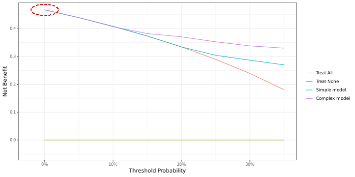
- Default strategy
- 患者を陽性（生検適応）と判断する確率：
P(t) - Net benefitの値のところで最も上のstrategyがより良いモデル
- Treat allとTreat noneよりは常に高くないといけない
- 左端のベースラインのリスクの高低も必ず評価する
DCA、NBの解釈
- 高価な検査、侵襲的な検査、面倒な検査の場合
- ΔNBの逆数がNNTと同じような役割を果たす（test tradeoff）
- 例
- 心Sarcoidosisの診断にPETを加えたモデルがある
P(t)が10%の時のΔNBが0.001- 10%以上で陽性とする基準でNNS 1000
- 言い換えると、111回やると1回の偽陽性を避けられる
NBの解釈例
- 以下にDCAの解釈の例を示す。
- 実線（）：treat all
- 点線（）：treat none
- 破線（）：モデル
- 一点鎖線（）：比較モデル
- 臨床的に意味がある閾値が20%(妥当な範囲が10-30%)と考えている
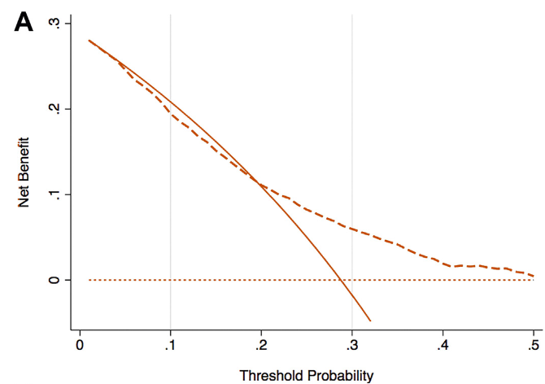
- モデルの線は20%を超えないとTreat allより高くない
- 患者によっては、10-15%でも治療を選択する
- 実質的にモデルは価値がない(Treat allで良い)
- モデルのCalibrationが悪く、Riskを過小評価している
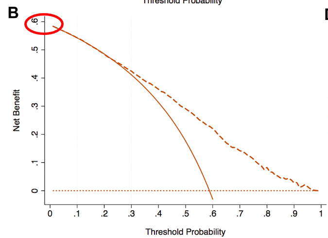
- このモデルはAUROCは高い
- しかし、有病率が高すぎる(60%)
- そのため、Treat allよりもモデルが良いレンジはReasonableな10-30%よりも高い
- 結果的には、このモデルも価値がない
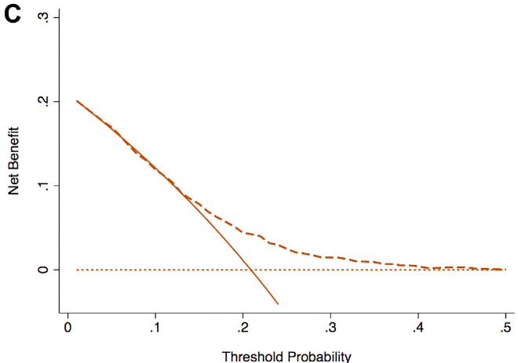
- 13%を超えた後はTreat allよりも良いNet benefitを示している
- 13%以下の時はTreat allと同じ性能
- もしも、このモデルが13%以下を出す事が多くなければ悪くないモデル
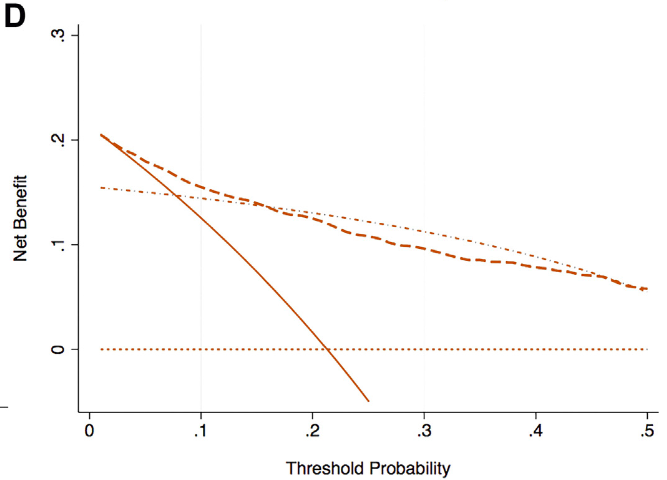
- 2つのModelは両者とも、Treat all/noneよりも良いNBを示している
- 一方で、このModelは13%くらいのところで交差しており、どちらがより良いかは示せない
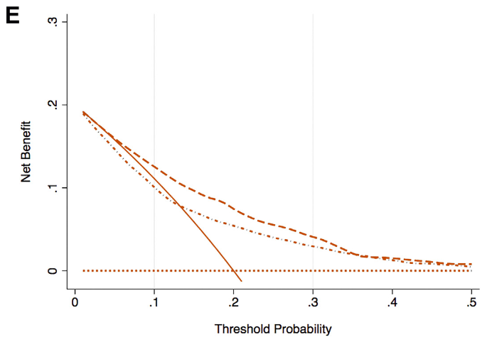
- モデルは非常によく、AUROCは0.75。また、比較モデルはさらに良くAUROC 0.8だった
- しかしながら、比較モデルはCalibrationが悪くRiskをUnderestimateしている
- Threshold rangeの中ではAUROC 0.75のModelの方が常に良いNBを示している
- AUROC 0.8の比較モデルはTreat allよりも悪く有害な可能性すらある
Decision Curve analysisのFigureの作り方
- 重要な事は、
P(t)のレンジを臨床的に意味のある範囲で決める - モデルから逆に
P(t)を決めてはいけない - 有病率（
P(t) = 0の時のNB）の値も確認 - 興味があるレンジでどのような動態かを確認する
- Calibrationが悪いとTreat allやTreat noneよりも悪くなりうる
- その場合はそれ以上の比較はしない
- 新しいモデルの費用や侵襲性、疾患の重要性などを勘案してNBの差を評価する
- 必要時、NBの逆数やoddsとの差を取ってtest tradeoffを評価
結局どうすればいいの？
- モデルを単に評価するだけなら不要
- ベースのモデルに対してどの程度変化したかを記述したい
- 元のモデルに対して何かのマーカー（BNP等）を追加したときに、その改善を言いたい
- cNRI
- 臨床的な有用性を強く主張したい
- 適切なカットオフを自分で決める
- Category-based NRIをevent/non-eventで記述する
- Decision curve analysisを用いる
Take Home Message
- 分類モデルの場合は弁別能と較正能を別個に評価しよう！
- 弁別能：AUROC
- 較正能：Calibration plotを用いる
- 分類モデルの場合はクラスの偏りに要注意！
- モデルの比較にNRI, Decision-curve analysisも使おう！
References
Alba, Ana Carolina, Thomas Agoritsas, Michael Walsh, et al. 2017. “Discrimination and Calibration of Clinical Prediction Models: Users’ Guides to the Medical Literature: Users’ Guides to the Medical Literature.” The Journal of the American Medical Association 318 (14): 1377–84. https://doi.org/10.1001/jama.2017.12126.
Cook, Nancy R. 2007. “Use and Misuse of the Receiver Operating Characteristic Curve in Risk Prediction.” Circulation 115 (7): 928–35. https://doi.org/10.1161/CIRCULATIONAHA.106.672402.
Creager, Mark A, Geoffrey D Barnes, Jay Giri, et al. 2026. “2026 AHA/ACC/ACCP/ACEP/CHEST/SCAI/SHM/SIR/SVM/SVN Guideline for the Evaluation and Management of Acute Pulmonary Embolism in Adults: A Report of the American College of Cardiology/American Heart Association Joint Committee on Clinical Practice Guidelines.” Journal of the American College of Cardiology 87 (13): 1626–710. https://doi.org/10.1016/j.jacc.2025.11.005.
Leening, Maarten J G, Moniek M Vedder, Jacqueline C M Witteman, Michael J Pencina, and Ewout W Steyerberg. 2014. “Net Reclassification Improvement: Computation, Interpretation, and Controversies: A Literature Review and Clinician’s Guide: A Literature Review and Clinician’s Guide.” Annals of Internal Medicine 160 (2): 122–31. https://doi.org/10.7326/M13-1522.
Than, Martin, Mel Herbert, Dylan Flaws, et al. 2013. “What Is an Acceptable Risk of Major Adverse Cardiac Event in Chest Pain Patients Soon After Discharge from the Emergency Department?: A Clinical Survey.” International Journal of Cardiology 166 (3): 752–54. https://doi.org/10.1016/j.ijcard.2012.09.171.
Vertosick, Emily, and Andrew Vickers. 2022. “Decision Curve Analysis for Quantifying the Additional Benefit of a New Marker.” April 11. https://www.fharrell.com/post/addmarkerdca/.
Vickers, Andrew J, Ben Van Calster, and Ewout W Steyerberg. 2016. “Net Benefit Approaches to the Evaluation of Prediction Models, Molecular Markers, and Diagnostic Tests.” BMJ (Clinical Research Ed.) 352 (January): i6. https://doi.org/10.1136/bmj.i6.
Medicine · Statistics · Home